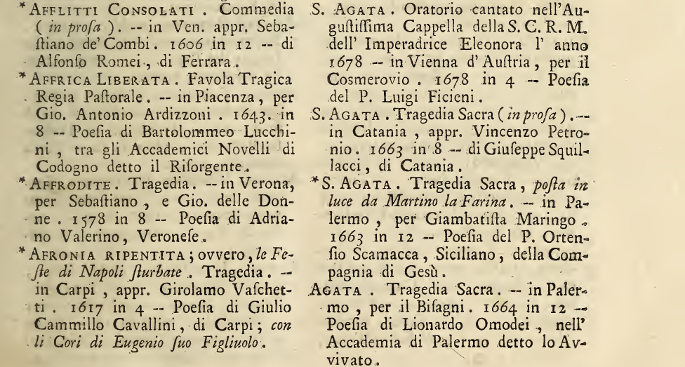

La Drammaturgia di Leone Allacci
La Drammaturgia è una bibliografia delle opere teatrali in lingua italiana edite ed inedite, a cui Leone Allacci, in collaborazione con Angelico Aprosio, lavora tra il 1654 e il 1666, anno della pubblicazione della princeps per i tipi del Mascardi a Roma. In questa prima edizione, i drammi sono elencati in ordine alfabetico e accompagnati da diversi indici (nomi e quello dei cognomi degli scrittori; città di provenienza; soggetti drammatici; opere inedite ma menzionate in altri repertori; varianti nei titoli).
Il testo riscuote un successo inatteso visto il carattere elencatorio della trattazione, ma non viene ripubblicato; proprio l'assenza di una ristampa e la difficoltà a trovare una copia del repertorio sono alla base della ripresa settecentesca del lavoro. A metà del XVIII secolo, infatti, un gruppo di letterati della cerchia di Apostolo Zeno, noto poeta e librettista veneziano, fornisce una nuova edizione aggiornata (Venezia, Pasquali, 1755); l'introduzione dello stampatore fornisce un resoconto della genesi editoriale dell'opera. In questa nuova versione, le informazioni contenute negli indici della princeps vengono inserite direttamente nelle voci del catalogo, ricco di dettagli e che lascia spazio anche a riflessioni dei nuovi compilatori su specifiche di carattere editoriale, stilistico, tematico.
Da un punto di vista formale, la Drammaturgia si presenta come una sorta di database ante litteram, dal momento che, soprattutto nella sua veste settecentesca, è un'opera caratterizzata da una struttura coerente e ripetitiva, ordinata secondo il criterio alfabetico e tendenzialmente organica nell'utilizzo dei segni diacritici per distinguere le sezioni informative. Nella maggior parte dei casi, al titolo segue un punto fermo, poi l'indicazione del genere e, tra parentesi, del metro; due lineette precedono le specifiche editoriali (città, stampatore, anno e formato); chiudono, di norma, i riferimenti all'autore e alle sue origini. Le voci che cominciano con un asterisco erano già presenti nella princeps del 1666. Di seguito una pagina campione del testo:
